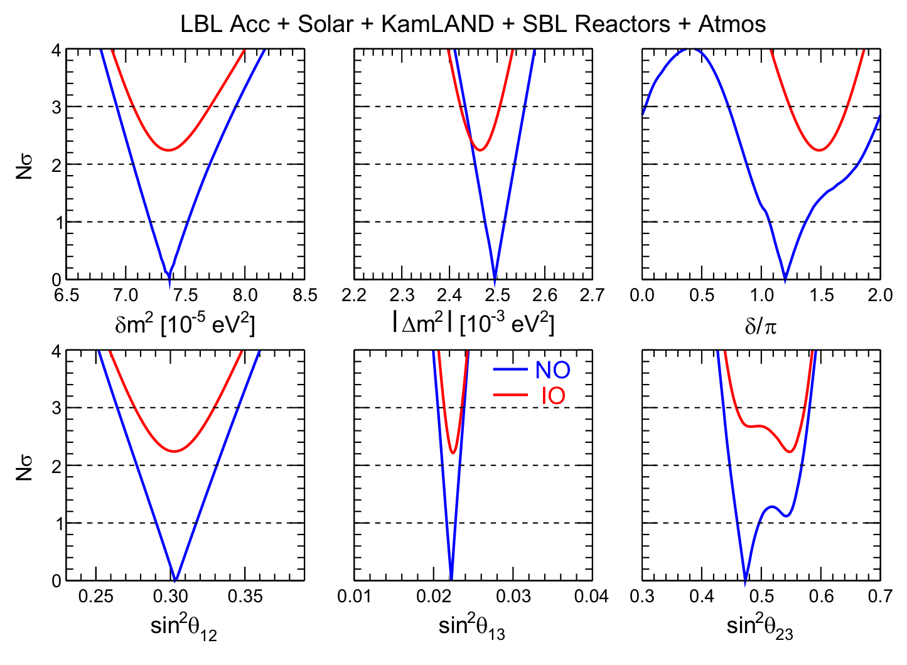
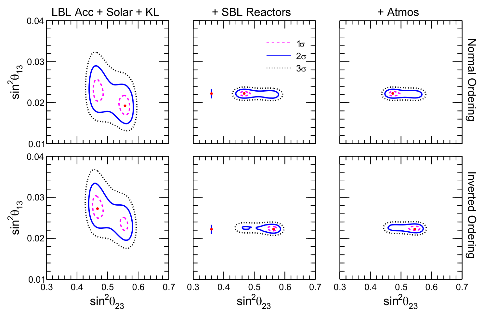

Results
Results, release by release
The most recent full release in detail: best-fit values and allowed ranges for the six oscillation parameters, in both mass orderings, with the paper and its figures beside them. Every earlier release is traced parameter by parameter on the parameter history.
Conventions used throughout this site
The two squared mass gaps are δm² = m₂² − m₁² > 0 and Δm² = m₃² − ½(m₁² + m₂²), with α = sign(Δm²) distinguishing normal ordering (NO, α = +1) from inverted ordering (IO, α = −1). Equivalently, our Δm² is the half-sum of the two larger splittings, Δm² = ½(Δm²₃₁ + Δm²₃₂), which is the form the conversion is easiest to read from: since Δm²₃₁ − Δm²₃₂ = δm², passing to either of them is a shift of ±δm²/2.
Other groups quote Δm²₃₁ or Δm²₂₃ instead: those numbers are not comparable with ours at a glance. Wherever this site compares analyses, it states the conversion it applied.
And the errors move differently from the values. Because
the offset carries its own uncertainty, the converted interval is wider than
the published one: the central value moves by more than one standard deviation
while the uncertainty grows by a fraction of a percent. Both numbers are computed from the register and quoted on the
parameter-history page, which also records
that the propagation still omits the δm²–Δm² correlation, and gives the formula — the published
papers do not carry the joint information a rigorous reprojection would need.
The exported register carries every interval in
both conventions, and an interval_method column saying which
treatment produced it.
March 2025 — Entering the era of subpercent precision
Updated global analysis of the known and unknown parameters of the standard three-neutrino framework, using data available at the beginning of 2025: solar, KamLAND, atmospheric, short-baseline reactor and long-baseline accelerator data.
| Parameter | Ordering | Best fit | 1σ range | 2σ range | 3σ range | “1σ” (%) |
|---|---|---|---|---|---|---|
| δm² / 10⁻⁵ eV² | NO, IO | 7.37 | 7.21 – 7.52 | 7.06 – 7.71 | 6.93 – 7.93 | 2.3 |
| sin²θ₁₂ / 10⁻¹ | NO, IO | 3.03 | 2.91 – 3.17 | 2.77 – 3.31 | 2.64 – 3.45 | 4.5 |
| |Δm²| / 10⁻³ eV² | NO | 2.495 | 2.475 – 2.515 | 2.454 – 2.536 | 2.433 – 2.558 | 0.8 |
| IO | 2.465 | 2.444 – 2.485 | 2.423 – 2.506 | 2.403 – 2.527 | 0.8 | |
| sin²θ₁₃ / 10⁻² | NO | 2.23 | 2.17 – 2.27 | 2.11 – 2.33 | 2.06 – 2.38 | 2.4 |
| IO | 2.23 | 2.19 – 2.30 | 2.14 – 2.35 | 2.08 – 2.41 | 2.4 | |
| sin²θ₂₃ / 10⁻¹ | NO | 4.73 | 4.60 – 4.96 | 4.47 – 5.68 | 4.37 – 5.81 | 5.1 |
| IO | 5.45 | 5.28 – 5.60 | 4.58 – 5.73 | 4.43 – 5.83 | 4.3 | |
| δ/π | NO | 1.20 | 1.07 – 1.37 | 0.88 – 1.81 | 0.73 – 2.03 | 18 |
| IO | 1.48 | 1.36 – 1.61 | 1.24 – 1.72 | 1.12 – 1.83 | 8 |
Δχ² projections, all data included
Fig. 3 of the paper · NO in blue, IO in red

Figure 3 from F. Capozzi, W. Giarè, E. Lisi, A. Marrone, A. Melchiorri and A. Palazzo, Neutrino masses and mixing: Entering the era of subpercent precision, Phys. Rev. D 111, 093006 (2025), doi:10.1103/PhysRevD.111.093006. Published by the American Physical Society under the terms of the Creative Commons Attribution 4.0 International license; reproduced here under those terms.
Where θ₂₃ and θ₁₃ meet
Fig. 4 of the paper · increasingly rich datasets

Figure 4 from the same paper, same citation and licence as above.
The same table, seen at a glance
best fit · 1σ · 3σ · one shared scale, in % of each best fit
Every row is centred on its own best fit and measured
outward in percent of it, on one shared axis, so the width of a row is how well
that parameter is known: |Δm²| is measured to ±2.5% at 3σ, while δ in normal
ordering runs off the axis at −39%/+69% and is marked where it leaves. Absolute
values are printed at the right. Values are those of Table I above; the figure
is generated from them by tools/make_figures.py, not drawn by
hand.
What changed
|Δm²| is now constrained at the 0.8% level — the first oscillation parameter to enter the subpercent precision era — against 1.1% in the previous update; the paper underlines in the same breath that there are issues about systematics which might affect that error estimate. The uncertainty on sin²θ₁₃ falls to 2.4%, from about 3%. For sin²θ₂₃ the two quasi-degenerate minima are closer than before, differing by roughly 15% against about 25% previously. Constraints on δ are similar to before within large uncertainties, with a weaker rejection of CP conservation in NO. The overall offset between the orderings is now Nσ = √5.0 = 2.2, down from 2.5σ.
Not included
The first published SNO+ reactor results are not included: they constrain δm² with an error larger than the one above by a factor of about 6, and only under a prior on θ₁₂. SNO+ is nevertheless expected to surpass the present δm² accuracy on (δm², θ₁₂) within a few years.
Since this release: the (1, 2) sector, updated
A partial update revises two of the six parameters above. Phys. Rev. D 114, 016026 (2026) (arXiv:2511.21650) adds the first JUNO results and the latest SNO+ data to the 2025 analysis and gives δm² = 7.48 (1σ 7.39 – 7.58) in units of 10⁻⁵ eV² and sin²θ₁₂ = 0.3085 (1σ 0.3010 – 0.3156). It quotes no new values for |Δm²|, sin²θ₁₃, sin²θ₂₃ or δ, which stand as in the table above. Both releases are on the parameter history, with the table each number was transcribed from.
Machine-readable data
planned for this release
Δχ² profiles and the tables above will be published here as documented files
at stable URLs — the kind of thing you can fetch from a script and cite — under
data/<release>/. They are exported from the analysis by a
dedicated step; the analysis code itself stays where it belongs and is never
part of this site.
Nothing is linked from this section yet: the export runs when the release material is prepared, and a link that does not resolve is worse than no link. What does exist today is the parameter register — every value on this site, with its source — published as JSON and CSV on the parameter history page.